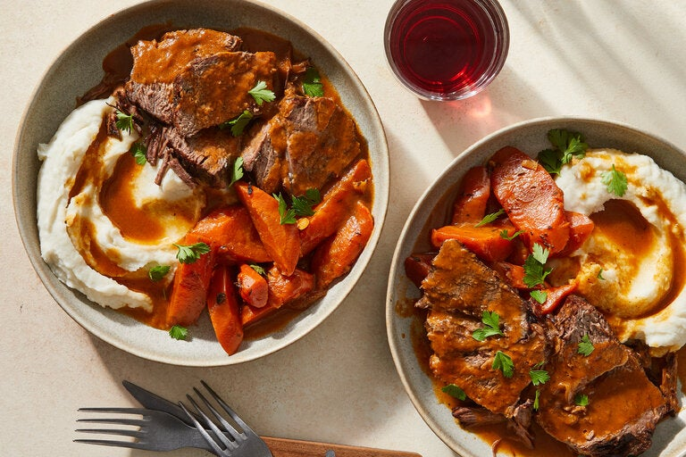

Jewish American Pot Roast

This is our family's go-to pot roaste recipe! Serve with mashed potatoes.
Brisket is now a luxurious, festive dish for Hanukkah and Passover,
but it was originally an inexpensive cut considered too tough for roasting.
This brisket recipe came from Mimi Sheraton, the New York Times’s first
restaurant critic and author of a memoir-cookbook, “From My Mother's Kitchen:
Recipes and Reminiscences” (HarperCollins, 1979), about growing up in Brooklyn in the 1930s.
It demands minimal preparation and limited ingredients — little more than onions and garlic —
but the low-and-slow cooking make it extraordinarily complex and delicious.
Although the brisket (breast) is traditional, the same recipe works beautifully with any stew cut,
such as chuck, oxtail or short ribs. Serve over mashed potatoes or egg noodles, or with boiled potatoes,
sprinkled with parsley.
Ingredients
- 2 tablespoons vegetable oil (or chicken, duck or goose fat), plus more as needed
- 4 pounds beef chuck or brisket, in one piece (or use 4 pounds stew meat, like boneless chuck, or boneless short ribs, or cheeks, cut into 2-inch chunks)
- 2 large onions, coarsely chopped or thinly sliced
- Kosher salt and black pepper
- 6 garlic cloves, chopped
- 2 teaspoons sweet paprika
- 1 tablespoon tomato paste (or 1 additional teaspoon paprika)
- 2 large carrots, peeled and cut into thick slices or chunks
- ¼ teaspoon dried thyme or 1 bay leaf
- Mashed potatoes, cooked egg noodles or halved boiled potatoes, sprinkled with parsley, for serving
Directions
- Heat oven to 300 degrees.
- In a large Dutch oven, heat 1 tablespoon oil over medium-high heat until it shimmers. Pat meat dry and brown on both sides, leaving it untouched until a crust forms on the bottom. Adjust the heat so that the meat sizzles enthusiastically but does not pop or scorch. When browned, remove it to a large plate.
- Add the remaining 1 tablespoon oil to the pot. Add onions, sprinkle with salt and cook over medium heat, scraping the bottom of the pan. Adjust the heat and stir often, so the onions soften but do not brown, about 10 minutes. Add garlic and continue cooking, stirring occasionally, until the mixture forms a soft, pale brown mass, 5 minutes more.
- Raise heat to medium-high, add paprika and cook, stirring, until the mixture sizzles. Push onions aside and add tomato paste to the center of the pot. Cook, stirring frequently, until it’s sizzling, then stir it into the onion mixture.
- Return meat and its juices to the pot. Add carrots, thyme and enough hot water to cover the carrots and onions (do not cover the meat). Cover tightly and bake until completely fork-tender, about 3 hours, turning the meat halfway through cooking.
- Remove pot from the oven. Remove the meat and carrots from the pot and set aside; discard the bay leaf, if using. Using a hand blender, purée the contents of the pot into a smooth gravy (or strain, then push the vegetables through a sieve and combine with the liquid). Heat the gravy through and, if necessary, simmer until thickened. Taste and adjust the seasonings with salt and pepper.
- If using a single piece of meat, slice the meat across the grain into ¼-inch-thick slices. Return meat and carrots to the pot, nestling them into the gravy. Cover and heat through over very low heat. Serve immediately, or, for the best flavor, refrigerate overnight and reheat before serving.